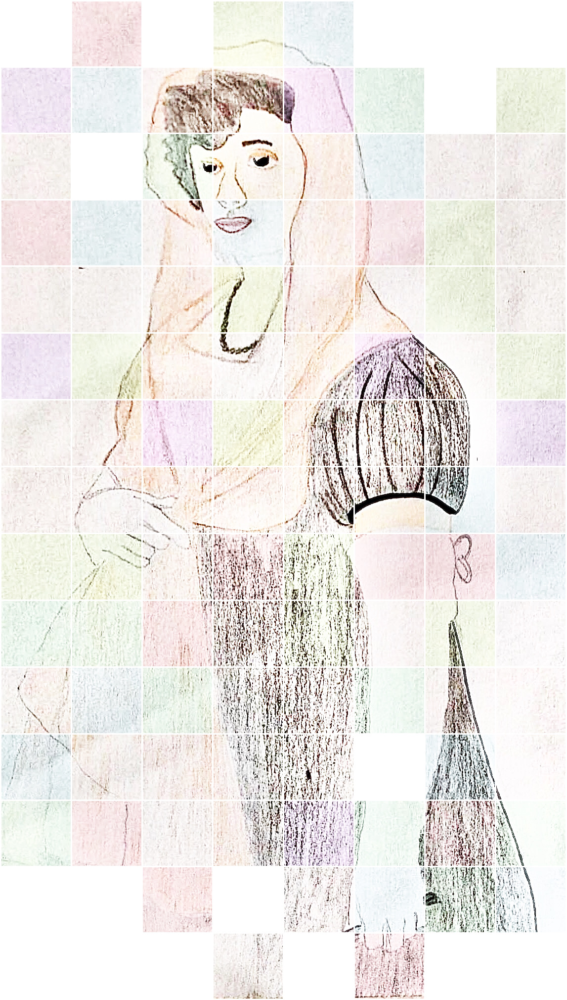

Filoginia - Antología escolar de escritoras hispánicas contemporáneas
Doña Francisca
Retrato de Doña Francisca
Laura Viana Pareja. Retrato de Doña Francisca en El sí de las niñas(CC BY-SA)
Laura Viana Pareja y JJMS. Retrato gráfico de Doña Francisca(CC BY-SA)
Doña Francisca es la protagonista de la obra El sí de las niñas. El personaje da vida al ideal femenino del siglo XVIII. Es una joven de diecisiete años de Guadalajara, ciudad del municipio de Castilla la Mancha.
Su madre, Doña Irene, tuvo un total de veintidós hijos, pero desgraciadamente perdió a veintiuno. Doña Francisca es la única de todos que aún vive, su padre también falleció hace años como todos sus hermanos. Está esta sumisa a su madre, obedece todo lo que le ordena para complacerla.
Paquita es muy graciosa, linda, humilde, inocente y talentosa. Tiene un donaire natural, es alegre. Es sentimental y empática ya que no quiere defraudar a su madre, solo quiere hacerla feliz.
Desde pequeña es educada en un convento de Guadalajara en el que sus tías son monjas. Con 16 años es sacada del convento por Don Diego, quien mantenía una amistad con Doña Irene. La madre de Doña Francisca estaba interesada en un matrimonio de convivencia entre su joven hija y el adinerado Don Diego, quien tiene 52 años.
Paquita nunca ha amado a Don Diego, pero se prometió con él para así complacer a su madre. De quién realmente está enamorada es del sobrino de su prometido, Don Carlos, con quien mantuvo relaciones en secreto.
Tenía miedo de contradecir a su madre, por lo que no era capaz de demostrar sus verdaderos sentimientos por educación. Era infeliz con Don Diego, pero aún así no se atrevía a rebelarse contra su madre.
Tras leer una carta de Don Carlos y Doña Francisca, Don Diego descubrió que su prometida no le amaba a él, sino a su sobrino. Él solo quería la felicidad para Doña Francisca, por lo que le ayudó a confesarle sus verdaderos sentimientos a su madre quien en un principio no lo acepta y rompe a llorar. Finalmente Doña Paquita y Don Carlos logran estar juntos.
Para Paquita la mayor fortuna es querer y ser querida, no le importa el dinero.
El sí de las niñas, de Leandro Fernández de Moratín
Lectura dramatizada por Laura Viana Pareja. Leandro Fernández de Moratín, El sí de las niñas(CC BY-SA)
Introducción
Autor:
El autor de El sí de las niñas es Leandro Fernández de Moratín. Fue un dramaturgo y poeta español del siglo XVIII, conocido como el Siglo de las Luces y caracterizado por el movimiento de la Ilustración.
Esta obra tiene una intención claramente reformista que busca darle a las mujeres la importancia, derechos y libertades que se merecen.
La obra plasma perfectamente la situación de aquella época. El autor critica las costumbres de su época, tales como el matrimonio de conveniencia, la falta de libertad y sinceridad de la gente, la religión y la autoridad de los padres sobre sus hijos.
Al hacer la obra con estos temas buscaba que la gente se viera reflejada, y de este modo concienciarlos para que cambien.
Género y tema principal:
La obra es una comedia neoclásica perteneciente al género dramático.
Este libro trata muchos temas, pero su tema principal es el matrimonio de conveniencia impuesto por los padres a sus hijos.
Antecedentes a la escena de la obra teatral:
Doña Francisca es una joven de 16 años que se encuentra en un convento de Guadalajara en el que sus tías son monjas.
Su madre, doña Irene, le organiza una boda con don Diego sin antes preguntarle, pues la joven está enamorada de un militar llamado don Félix. A pesar de esto, Paquita acepta la proposición de matrimonio para así complacer a su madre. Esta tiene miedo de decirle la verdad ya que ha sido educada para obedecer a su madre aun teniendo que ocultar sus sentimientos.
Don Diego y doña Irene van a Guadalajara para sacar del convento a doña Francisca y llevarla a Madrid, lugar donde se realizará el enlace.
Al caer la noche paran en una posada de Alcalá, en la que el amante de doña Francisca llega desde Zaragoza tras haber recibido una carta de esta contándole su futuro casamiento. El amante al que Paquita conocía como don Félix, realmente se llamaba don Carlos y era el sobrino de su prometido. Él no sabía qué con quién estaba prometida era con su tío, lo descubre después de hablar con su amante.
Don Carlos se encuentra con don Diego, quien le manda de vuelta a Zaragoza. Finge irse, pero antes va ha hablar con Paquita, a quien le tira una carta en la que se lo explica todo. La carta cae en manos de Simón, criado de don Diego, por lo que este se entera del amor que hay entre su prometida y su sobrino.
Tras hablar don Diego con doña Francisca sobre la carta de don Carlos que había caído en sus manos sin tener que hacerlo, este decide contarle todo a doña Irene, quien en un principio se vuelve histérica y no lo acepta.
Representación
Don Carlos - Javi Flores
Don Diego - Andrés Díaz
Doña Irene - Laura Viana
Doña Francisca - Ana Jimenez
Rita - Voluntario
ESCENA XII
(Don Diego, doña Irene, Rita y doña Francisca se encuentran en el pasillo de una posada de Alcalá.
Don Carlos está escondido detrás de la puerta de una de las habitaciones, inesperadamente sale y coge de la mano a doña Francisca con intención de defenderla ante su madre.
Doña Irene, que estaba histérica al lado de su hija se asusta y se aleja.)
DON CARLOS.- Eso no... Delante de mí nadie ha de ofenderla.
DOÑA FRANCISCA.- ¡Carlos!
DON CARLOS (A don Diego.).- Disimule usted mi atrevimiento... He visto que la insultaban y no me he sabido contener.
DOÑA IRENE (Sorprendida y nerviosa).- ¿Qué es lo que me sucede, Dios mío? ¿Quién es usted?... ¿Qué acciones son éstas?... ¡Qué escándalo!
DON DIEGO.- Aquí no hay escándalos... Ése es de quien su hija está enamorada... Separarlos y matarlos viene a ser lo mismo... Carlos... No importa... Abraza a tu mujer.
(Se abrazan Don Carlos y Doña Francisca, y después se arrodillan a los pies de Don Diego.)
DOÑA IRENE.- ¿Conque su sobrino de usted?...
DON DIEGO.- Sí, señora; mi sobrino, que con sus palmadas, y su música, y su papel me ha dado la noche más terrible que he tenido en mi vida... ¿Qué es esto, hijos míos; qué es esto?
DOÑA FRANCISCA.- ¿Con qué usted nos perdona y nos hace felices?
DON DIEGO.- Sí, prendas de mi alma... Sí. (Les ayuda a levantar con expresión de ternura.)
DOÑA IRENE.- ¿Y es posible que usted se determina a hacer un sacrificio?...
DON DIEGO.- Yo pude separarlos para siempre y gozar tranquilamente la posesión de esta niña amable, pero mi conciencia no lo sufre... ¡Carlos!... ¡Paquita!... ¡Qué dolorosa impresión me deja en el alma el esfuerzo que acabo de hacer!... Porque, al fin, soy hombre miserable y débil.
DON CARLOS.- Si nuestro amor (Besándole las manos.), si nuestro agradecimiento pueden bastar a consolar a usted en tanta pérdida...
DOÑA IRENE.- ¡Conque el bueno de Don Carlos! Vaya que...
DON DIEGO.- Él y su hija de usted estaban locos de amor, mientras que usted y las tías fundaban castillos en el aire, y me llenaban la cabeza de ilusiones, que han desaparecido como un sueño... Esto resulta del abuso de autoridad, de la opresión que la juventud padece; éstas son las seguridades que dan los padres y los tutores, y esto lo que se debe fiar en el sí de las niñas... Por una casualidad he sabido a tiempo el error en que estaba... ¡Ay de aquellos que lo saben tarde!
DOÑA IRENE.- En fin, Dios los haga buenos, y que por muchos años se gocen... Venga usted acá, señor; venga usted, que quiero abrazarle. (Abrazando a Don Carlos, Doña Francisca se arrodilla y besa la mano de su madre.) Hija, Francisquita. ¡Vaya! Buena elección has tenido... Cierto que es un mozo muy galán... Morenillo, pero tiene un mirar de ojos muy hechicero.
RITA.- Sí, dígaselo usted, que no lo ha reparado la niña... señorita, un millón de besos. (Se besan Doña Francisca y Rita.)
DOÑA FRANCISCA.- Pero ¿ves qué alegría tan grande?... ¡Y tú, cómo me quieres tanto!... Siempre, siempre serás mi amiga.
DON DIEGO.- Paquita hermosa (Abraza a Doña Francisca.), recibe los primeros abrazos de tu nuevo padre... No temo ya la soledad terrible que amenazaba a mi vejez... Vosotros (Agarra de las manos a Doña Francisca y a Don Carlos.) seréis la delicia de mi corazón; el primer fruto de vuestro amor... sí, hijos, aquél... no hay remedio, aquél es para mí. Y cuando le acaricie en mis brazos, podré decir: a mí me debe su existencia este niño inocente; si sus padres viven, si son felices, yo he sido la causa.
DON CARLOS.- ¡Bendita sea tanta bondad!
DON DIEGO.- Hijos, bendita sea la de Dios.
FIN
CONCLUSIÓN
La mentalidad dominante de la época se puede ver a través de Doña Irene, una mujer conservadora que representa la sociedad que existía en ese momento.
Nos muestra el tipo de educación establecida en su época cuando somete a su hija a un matrimonio sin preguntarle antes. Lo hacía por conveniencia ya que don Diego tenía mucho dinero.
También se puede ver la educación de aquel momento cuando doña Irene le ocultaba la verdad a su madre ya que tenía miedo a no complacerla. Eran educadas para obedecer sin rechistar, aún teniendo que ocultar sus sentimientos.
En la obra se pueden observar otros temas sociales como el estereotipo de esposa ideal, que según citaba don Carlos: “Debe ser aprovechada, hacendosa, que sepa cuidar de la casa, economizar, estar en todo...”; o la labor de los oficiales: “Un oficial siempre hace falta a sus soldados. El rey le tiene allí para que los instruya, los proteja y les dé ejemplos de subordinación, de valor, de virtud”.
Por otro lado don Diego critica la mentalidad de la época, cuestiona que una buena educación se basa en enseñar a obedecer aunque tengan que ocultar sus sentimientos y mantenerse en silencio por temor. Busca lo mejor para los demás y desde el principio de la obra quiere la sinceridad de doña Irene y su felicidad.
Opinión.
En cuanto a los matrimonios de conveniencia me alegra ver que a pesar de que en algunas culturas siga presente este tipo de matrimonios, en la sociedad actual este problema esté desapareciendo casi por completo. Aun así es una pena que siga existiendo, espero que disminuya pronto.
Estoy de acuerdo con don Diego sobre la educación que recibían los hijos, la manera en que los padres los oprimían y la influencia que tenían en ellos a la hora de tomar decisiones Creo que es mejor ser auténtico y expresar la realidad de lo que sentimos a reprimirla y ocultarla ya que lo último solo nos hará infelices.